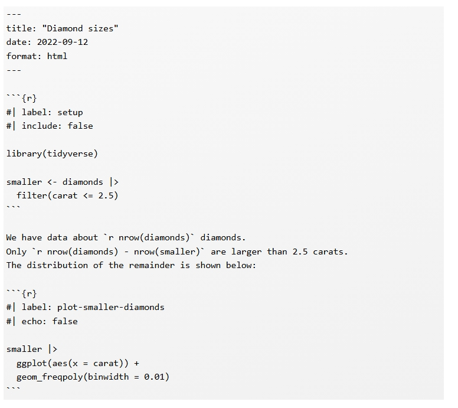
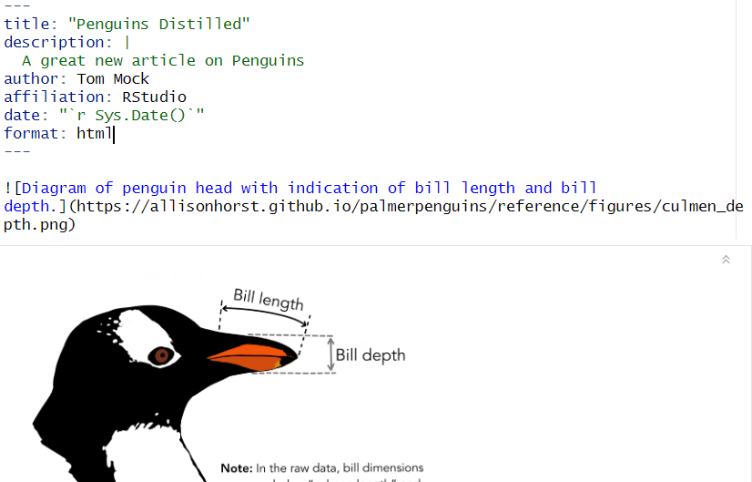
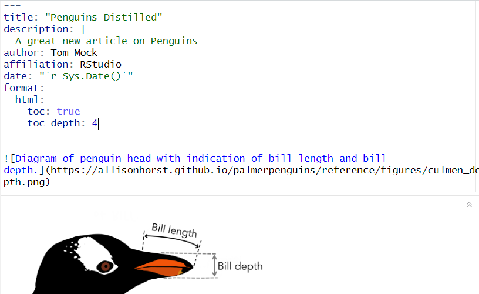
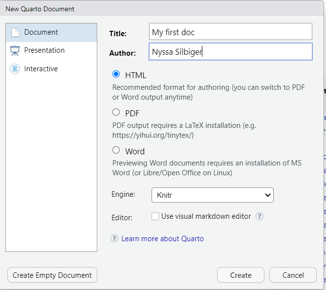
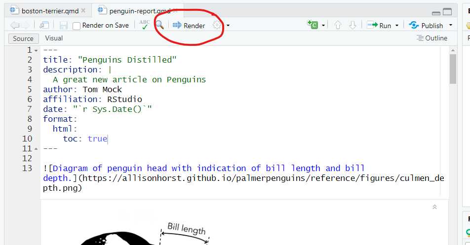
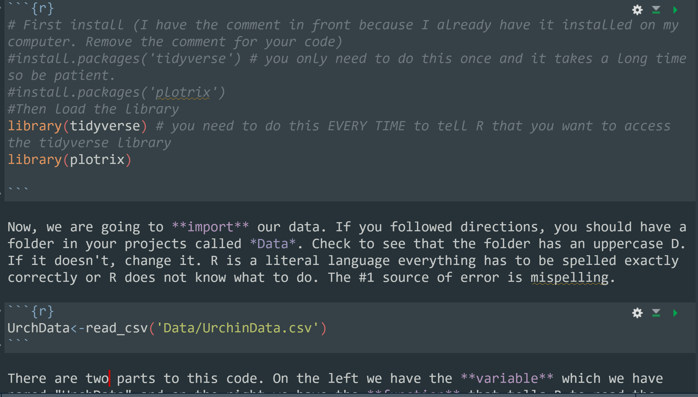
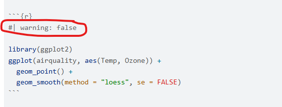
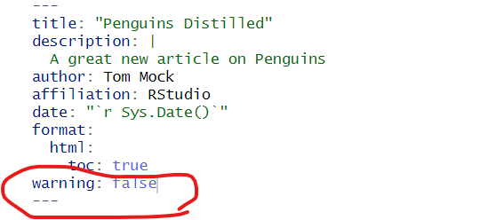
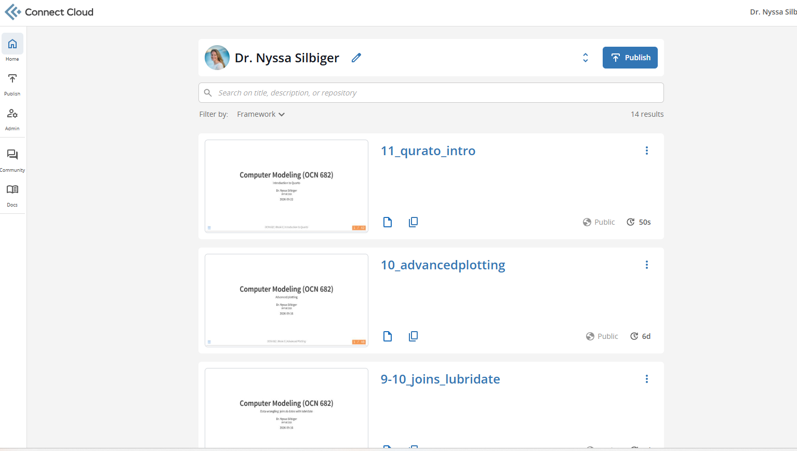

Computer Modeling (OCN 682)
Introduction to Quarto
UH Fall 2026
2026-09-22
Outline of class
- Quiz 5
- What is Quarto?
- Metadata and outputs
- Basic Markdown Text
- Using code chunks
- Publishing & sharing your document
Review
If I want to convert Feb 28 2021 10:05:50 to a date, what function do I use?
What is Quarto?
Analyze. Share. Reproduce. You have a story to tell with data—tell it with Quarto.

What is Quarto?
Quarto provides a unified authoring framework for data science, combining your code, its results, and your prose. Quarto documents are fully reproducible and support dozens of output formats, like PDFs, Word files, presentations, and more.
- For communicating to decision-makers, who want to focus on the conclusions, not the code behind the analysis.
- For collaborating with other data scientists (including future you!), who are interested in both your conclusions, and how you reached them (i.e. the code).
- As an environment in which to do data science, as a modern-day lab notebook where you can capture not only what you did, but also what you were thinking.
Change your mental mode
Source to Output

Source to Output

Key idea
Take your notes in the same place as your code
What is inside?

What is inside?
Quarto is broken into 4 major parts:
- Metadata
- Text
- Code
- Output

Before we code together I will walk you through some of the features. Then I will have you work with me.
Metadata: YAML
YAML - yet another markup language
This goes at the top of your Quarto document, includes the metadata, style, and type of output for your document.
Example YAML


Let’s get started

Enter in some metadata and save the doc in your folder

You create an html document by hitting render

Text
The text is written in the markdown language. You have already done a lab on markdown and this is the exact language that you use for your readme files. This is a short review.
Bold
Lists
Images

Links
Code chunks
You can add a code chunk by pressing
- the keyboard shortcut Ctrl + Alt + I (OS X: Cmd + Option + I)
- Click Code at the top of RStudio then +C in green.

Code chunk options
You can control what you want printed in the html within the code chunks by giving a key and a value within the chunks after a #|

Global code chunk options in the YAML
This will suppress warnings in every single code chunk as a default

The execute: YAML block
Instead of setting options on every single chunk, set defaults once in your YAML:
Inline R code
Why type numbers by hand?
Hard-coded (fragile)
The dataset contains 344 penguins across 3 species. The mean body mass was 4201.8 grams.
Problem
If the data change, you have to find and update every number by hand — and it’s easy to miss one.
Inline R code (reproducible)
The dataset contains 344 penguins across 3 species. The mean body mass was 4201.8 grams.
Benefit
R recalculates every time you render — your text is always in sync with your data.
Inline R code: syntax
Wrap any R expression between a backtick-r and a closing backtick, directly in your prose:
The output renders as plain text — readers never see the R code, only the result.
Inline R code: what it looks like
Activity: Inline R code
Open your Quarto document and add a prose paragraph using only inline R — no hard-coded numbers.
- Load palmerpenguins in a code chunk at the top
- Write a prose sentence describing the dataset (count, species, islands)
- Write a second sentence with a summary statistic — try mean(), max(), or min(), wrapped in round()
- Hit Render and confirm the numbers appear correctly in the output
Scaffold to get started
In your prose (not inside a chunk), write something like:
“There are X penguins across Y islands. The heaviest weighed Z grams.”
Replace X, Y, Z with nrow(), n_distinct(), max() — each wrapped in backtick‑r … backtick
File paths in Quarto
Quarto renders from the file’s location, not the project root
Solution: always use here()
Publishing your Quarto document
What is Posit Connect Cloud?
connect.posit.cloud is a free hosted service where you can publish and share your rendered Quarto documents, R Markdown files, and Shiny apps as a live URL.
- Anyone with the link can view your rendered document — no R required
- Every time you re-publish, the URL stays the same
- This is how you will submit homework — share the link, not the file
Free tier is enough
The free account supports publishing documents for this course. No credit card needed.
Step 1: Create your account
- Go to connect.posit.cloud
- Click Sign Up and create a free account
- Verify your email address
- Log in — you should see your empty Connect Cloud dashboard

Step 2: Link RStudio to your account
Run this once in your console — it opens a browser window to authenticate:
Do this in the console, not your script
Authentication stores a token on your machine. You only need to do this once per computer.
Step 3: Publish your document
With your .qmd file open, run this in the console:
What happens next
Quarto renders the document, bundles it, and uploads it to Connect Cloud. Your browser will open automatically to the published page when it’s done.
You can also press the “Publish” button at the top right.
Step 4: Share your link
After publishing, your browser opens to the live document. Copy that URL — that is what you submit.
- On the published page, click Access in the left sidebar
- Under Who can view this content, select Anyone
- Copy the URL from your browser’s address bar
- Paste it into your readme file
Make it public before submitting
If you leave access set to “Only me,” I cannot open your link and you will not receive credit.
Totally awesome R package of the day
Upcoming homework: Good Plot / Bad Plot 🏆
Due October 20 — this is a contest. There is a prize.
Create two versions of a plot using any dataset you choose:
- Bad plot: Make it as misleading, confusing, and ugly as possible — then explain in writing every principle you broke
- Good plot: Same (or similar) data, done right — explain briefly why it works
Rules: - Both plots made in ggplot2 with code visible in your Quarto document - The raw data must be visible in at least one plot - Submit as a rendered Quarto doc pushed to your GitHub folder — create a dedicated goodplot-badplot/ folder - Let me know if you prefer your plots not be posted on social media
Great data source
TidyTuesday — a new dataset every week, community favorites included
Thanks!
Slides created with Quarto
OCN 682 | Week 6 | Introduction to Quarto